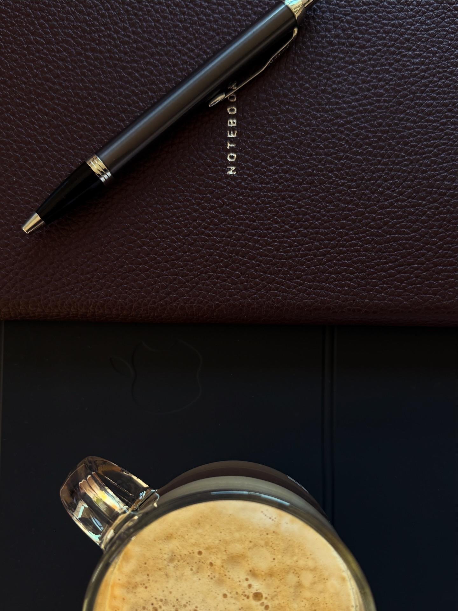
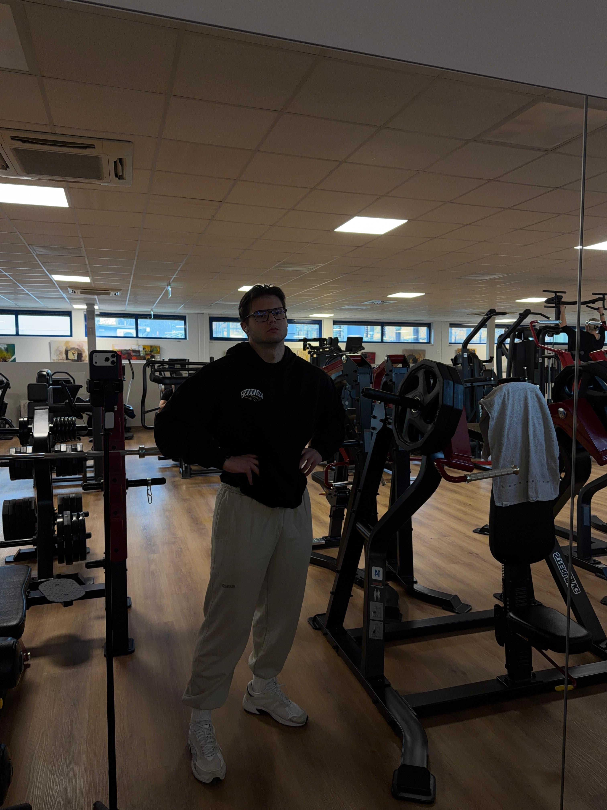
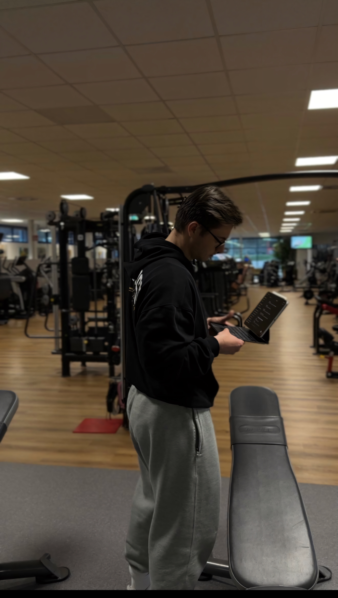

DIE PERSON
Tobias

Tobias
Kornberger
Mein Weg begann mit einer einfachen Frage: Wie wird man körperlich und mental stark – ohne sich selbst zu verlieren?
MEIN ANTRIEB
Sport ist für mich mehr als Training. Er ist Ausgleich, Energie und Verantwortung. Spätestens seit meiner Typ-1-Diabetes Diagnose 2019 weiß ich, wie entscheidend Bewegung für Körper und Geist ist.
DIE HALTUNG
Heute gebe ich genau das weiter. Nicht nur Training – sondern eine Haltung: Disziplin als Entscheidung für ein besseres Leben.
GEMEINSAMER WEG
Durch meine Erfahrung im Teamsport habe ich gelernt, wie wichtig es ist, sich gegenseitig zu pushen. Genau dabei begleite ich dich.
Ehrlich. Fokussiert. Nachhaltig.



© 2026 COACH TOBI